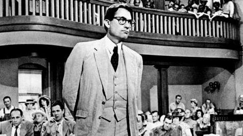
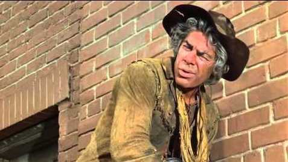
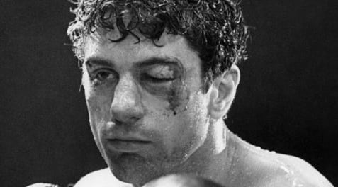

Oscar Winners By Race
By: Renee Onque | March 8, 2021
For years the Oscar's have been called out for a lack of diversity in their winners for lead actors and actresses. We'll take a look into just how progressive they are by looking at every winner for Lead Actor in a Film since 1960 by race.
Use the dropdown menu to choose each race
Charlton Heston, “Ben-Hur” (1960)
Burt Lancaster, “Elmer Gantry” (1961)
Maximilian Schell, “Judgment at Nuremberg’ (1962)

Gregory Peck, “To Kill a Mockingbird” (1963)
Sidney Poitier, “Lilies of the Field” (1964)
Rex Harrison, “My Fair Lady” (1965)

Lee Marvin, “Cat Ballou” (1966)
Paul Scofield “A Man for All Seasons” (1967)
Rod Steiger, “In the Heat of the Night” (1968)
Cliff Robertson, “Charly” (1969)
John Wayne, “True Grit” (1970)
George C. Scott, “Patton” (1971)
Gene Hackman, “The French Connection” (1972)
Marlon Brando, “The Godfather” (1973)
Jack Lemmon, “Save the Tiger” (1974)
Art Carney, “Harry and Tonto” (1975)
Jack Nicholson, “One Flew Over the Cuckoo's Nest” (1976)
Peter Finch, “Network” (1977)
Richard Dreyfuss, “The Goodbye Girl” (1978)
Jon Voight, “Coming Home” (1979)
Dustin Hoffman, "Kramer vs. Kramer" (1980)

Robert De Niro, "Raging Bull" (1981)
Henry Fonda, "On Golden Pond" (1982)
Ben Kingsley, "Gandhi" (1983)
Robert Duvall, "Tender Mercies" (1984)
F. Murray Abraham, “Amadeus” (1985)
William Hurt, “Kiss of the Spider Woman” (1986)
Paul Newman, “The Color of Money” (1987)
Michael Douglas, “Wall Street” (1988)
Dustin Hoffman, “Rain Man” (1989)
Daniel Day Lewis, “My Left Foot” (1990)
Jeremy Irons, “Reversal of Fortune” (1991)
Anthony Hopkins, “The Silence of the Lambs” (1992)
Al Pacino, “Scent of a Woman” (1993)
Tom Hanks, “Philadelphia” (1994)
Tom Hanks, “Forrest Gump” (1995)
Nicolas Cage, “Leaving Las Vegas” (1996)
Geoffrey Rush, “Shine” (1997)
Jack Nicholson, “As Good As It Gets” (1998)
Roberto Benigni, “Life Is Beautiful” (1999)
Kevin Spacey, “American Beauty” (2000)
Russell Crowe, “Gladiator” (2001)
Denzel Washington, “Training Day” (2002)
Adrien Brody, “The Pianist” (2003)